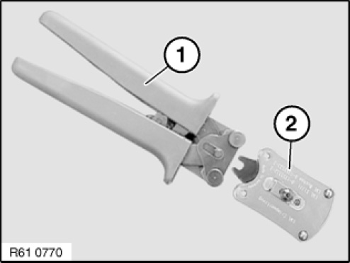
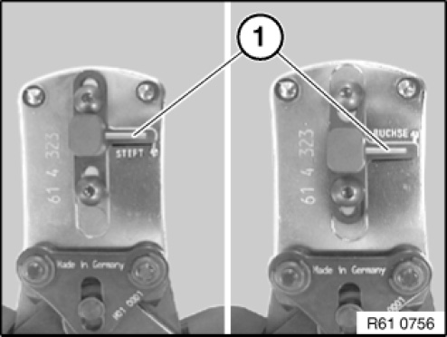
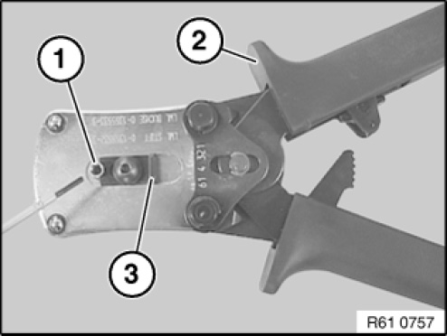
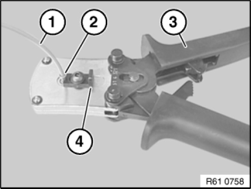
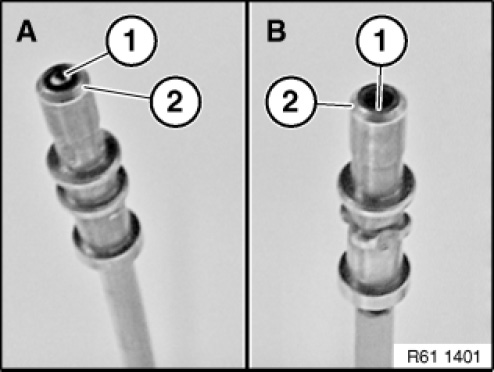

61 13 ... Crimping Optical Fibers
61 13 ... Crimping Optical Fibres
Special tools required:

To crimp optical fibres, use hand pliers 61 4 321 (1) in conjunction with crimping head 61 4 323 (2) from crimping set 61 4 320 61 4 320 Crimping Tool
NOTE: Hand pliers (1) open automatically until limit position when handles are pressed together.

Move contact guide by means of stop lever (1) into corresponding position (pin contact or jack).

Open hand pliers (2).
Place pin contact or jack (1) in crimping head and secure with locking lever (3).

NOTE: Follow procedure for cutting and stripping insulation from optical fibres
Insert stripped optical fibre(1) until limit position into pin contact or jack (2).
Close hand pliers (3) fully.
Open hand pliers (3) and locking lever (4).
Remove optical fibre (1).

IMPORTANT: Make sure optical fibre is correctly seated in jack.
Right (A)
End of optical fibre (1) must be flush with tip of pin contact (2).
Wrong (B)
End of optical fibre (1) is not flush with tip of pin contact (2).